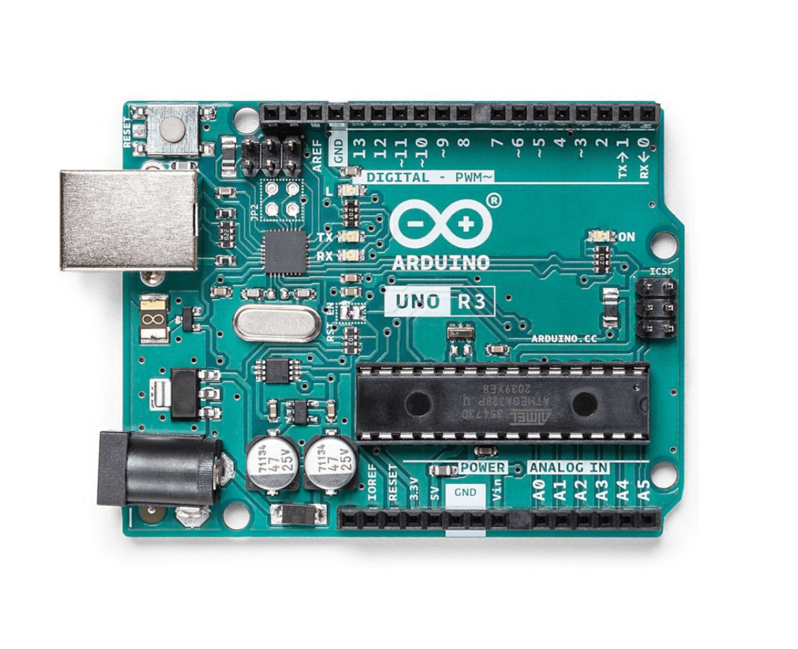
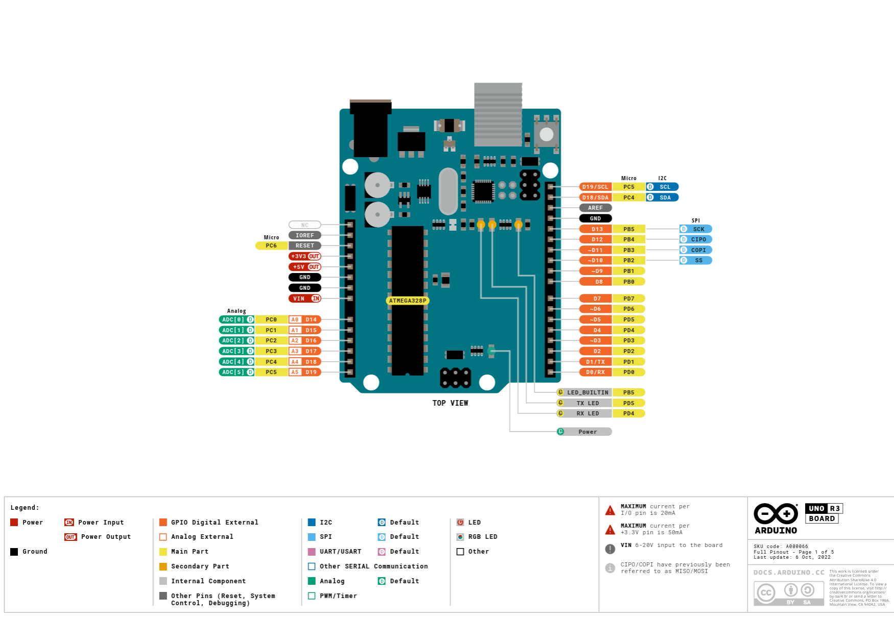

The most popular Arduino board is the Arduino UNO R3. This guide will help you understand the basics of the board while also preparing you for your firs project. For the project you should have an Arduino UNO R3, some jumper cables, a breadboard, a 220 Ohm resistor and a simple LED.
Before you can start your first project we will introduce you to the Arduino R3.
This is an Arduino UNO R3
The image shown can appear intimidating at first, but we assure you that's not the case. The first thing that stands out is the black rectangle on the bottom-right side of the board. That is the ATmega328P microcontroller. The 8-bit microcontroller is the "brain" of the board. That means it runs your code and transforms inputs into outputs as needed. The inputs can be determined by you, but in most cases the inputs represent signals that come from sensors.
Now, you may wonder : how can I manage inputs and outputs? The answer is by using the digital and analog pins, which are located on the top and bottom margin as shown in the picture. The ones on top are called digital pins and they have two states : HIGH and LOW. The bottom pins are analog and they can have values between 0-1023.
If you want, you can study the next image for a better understanding of the components, as they have many more functions. This guide will not dive into those:
Now we will help you make your first project. Follow the steps bellow:
Now that you made your first project, feel free to use other components and sensors to help make your ideas a reality. Here is a demonstration video of a simple radar project: